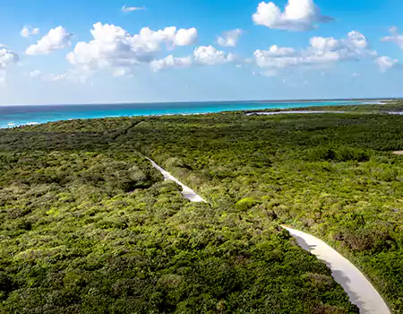

Tours
Isla Pasión

Drive in one of our jeeps or motorcycles to Isla Passion. Enjoy the beach for as long as you want with our recommendations, either with a personal guide or be free to go wherever you want.
Three round beaches

Go by jeep or motorcycle to the three most representative islands of Cozumel. In this round trip visit three islands, with an approximate time of 6 hours. Admire the beauty of these little-explored islands and bring back unforgettable memories.
Get wild!
In our off-road vehicles you can explore incredible roads. With our experience, always accompanied by security, you can enjoy wild roads that lead to wonderful islands. Don't miss out on exploring these hidden paradises of Cozumel.